Scratch
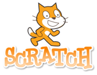
Si bien Geogebra es un software esencialmente matemático, Scratch es una aplicación que ha ido ganando mucha popularidad en diferentes ámbitos y que tiene también un potencial enorme en la enseñanza y el aprendizaje de ciertos contenidos propios de las matemáticas. Normalmente, Scratch se asocia a lo que se conoce como pensamiento computacional. De hecho, existen cursos que directamente se denominan «Pensamiento computacional con Scratch».
Los algoritmos en la educación matemática
La enseñanza de las matemáticas está llena de algoritmos. Así, ya en las primeras etapas nos encontramos con algoritmos (tradicionales o no) para las operaciones básicas, más adelante tenemos los que permiten calcular el mínimo común múltiplo y el máximo común divisor y... en bachillerato, por ejemplo, se aprende el método de Gauss para resolver sistemas de ecuaciones lineales. Al enseñar estos algoritmos, lo realmente interesante, es que los alumnos aprendan a asignarles un significado. Es decir,
Por otro lado, cuando diseñamos un algoritmo hemos de tener muy claro el resultado al que queremos llegar y los pasos que vemos necesarios para alcanzarlo. Además, exige describir muy bien estos pasos. Hay que describirlos tan bien, ¡que hasta una cosa tan tonta como una máquina debe ser capaz de entenderlos!
Conste que todo esto del pensamiento computacional no nace con Scratch. Ni mucho menos. Basta recordar la famosa tortuguita de Logo con la que se introducía la programación a los más pequeños hace décadas.
Un ejemplo de pseudocódigo
El siguiente ejemplo describe lo que vendría a ser un entrenamiento de natación. Es un algoritmo que devuelve los metros que se han hecho en total, a partir del número de series de 100 que se definen, los metros de calentamiento y los metros de vuelta a la calma.
ALGORITMO entrenamiento
DATOS
calentamiento
calma
numseries100
metros
INICIO
metros = 0
calentamiento = 400
calma = 600
numseries100 = 10
metros = calentamiento
REPETIR numseries100
metros = metros + 100
FIN REPETIR
metros = metros + calma
ESCRIBIR “Has hecho <metros> metros. Enhorabuena”
FIN
Otro ejemplo de pseudocódigo: algoritmo de la suma tradicional
Las siguientes líneas de pseudocódigo muestran los pasos
ALGORITMO suma
DATOS
sumando1
sumando2
INICIO
escribir el primer número
escribir debajo el segundo número, de forma que coincidan unidades con unidades, decenas con decenas, etc.
trazar una línea horizontal
llevada=0
REPETIR veces=máximo(cifras de sumando1, cifras de sumando2)-1
orden=0 //indica la posición que tomaremos. Orden 0 serán las unidades.
parcial=sumando1(orden)+sumando2(orden)+llevada //observar que la primera vez, la llevada es 0
SI parcial<10 ENTONCES //no hay llevada
ESCRIBIR parcial
llevada=0
EN CASO CONTRARIO //hay llevada
ESCRIBIR parcial-10
llevada=1
MOVER mano a siguiente columna
orden=orden+1 //pasamos a la siguiente columna, es decir, al siguiente orden de magnitud.
ESCRIBIR sumando1(orden)+sumando2(orden)+llevada // para el último orden, se escribe el resultado directamente
FIN
Empezando con Scratch
La tarea de iniciación a Scratch más habitual es la realización de un collage de presentación. Para ello, aunque se puede hacer con el editor offline (https://scratch.mit.edu/download), recomendamos hacerlo directamente en el editor online. En primer lugar, nos crearemos una cuenta:
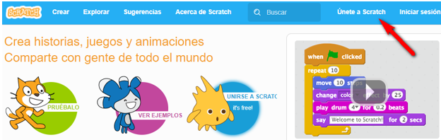
Cuando creamos un proyecto nuevo, lo que veremos será algo similar a lo de la figura siguiente. La zona gris de la derecha es donde iremos añadiendo los programas, que actuarán sobre el objeto seleccionado a la derecha.
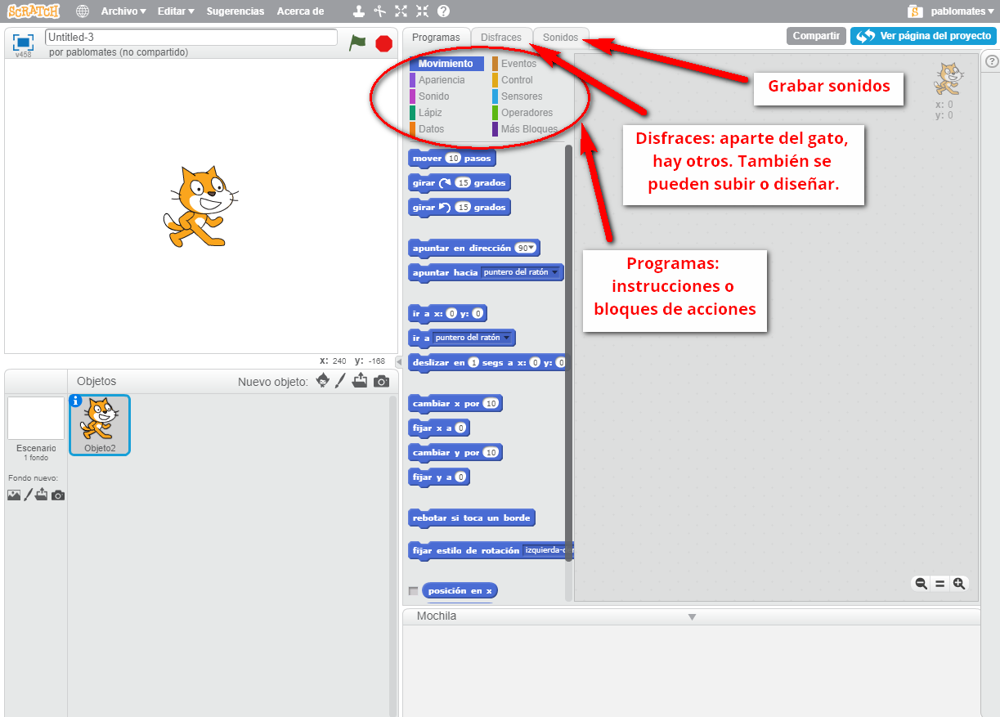
Paso 1. Elegimos o subimos el objeto que queramos
Borramos el gato que aparece por defecto (botón derecho sobre el objeto y borrar) y añadimos uno nuevo, bien de la galería, bien subido por nosotros. En este caso, hemos elegido una rana. Aparecerá en la ventana superior de la izquierda y observaremos que al desplazarla con el ratón, podemos ver sus coordenadas, tal y como se observa en la siguiente image:
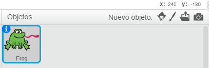
Paso 2. Elegimos el fondo
De la misma forma que hemos hecho para la rana, elegimos el fondo que queramos.
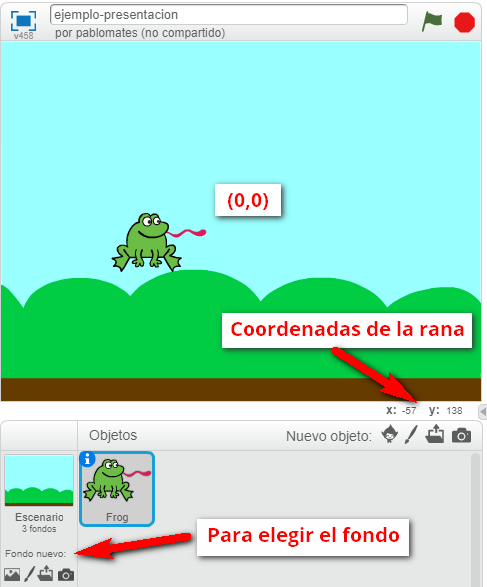
Paso 3. Primera acción
Por ejemplo, queremos que cuando le demos a la banderita verde (que marca el inicio de cualquier programa de Scratch), la rana diga «Hola» y salte. La «banderita» es un evento y, como tal, lo tenemos en el menú de eventos. Lo arrastramos a la ventana de la derecha. Hacemos lo mismo para la instrucción «decir», que encontraremos en el bloque de apariencia y para la instrucción «mover», que está en el bloque de movimiento. Las encajamos para conseguir esto:
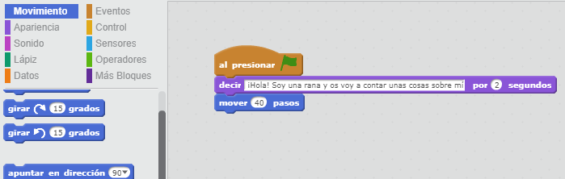
Si presionamos la banderita en la ventana de la izquierda, ahora veremos cómo va la cosa:
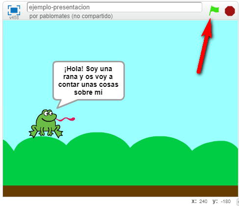
Paso 4. Añadir otras acciones
Vamos a añadir una mariposita, de manera que al hacer clic sobre ella, la rana diga que le gusta comer pequeños animalitos voladores. Comenzamos de esta manera, donde la mariposa, cuando se hace clic sobre ella, manda un «mensaje» (es como una señal de activación).
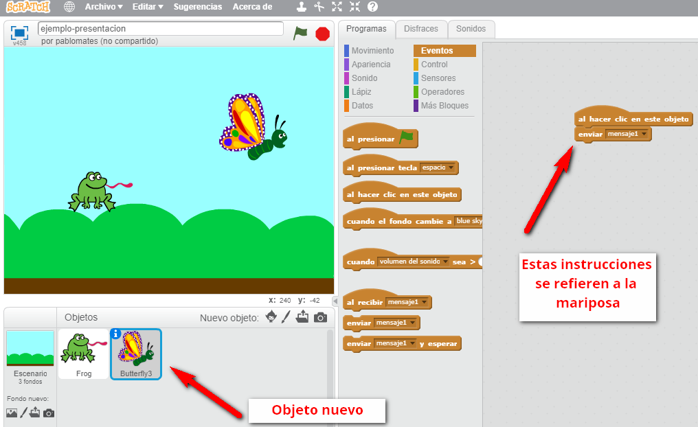
La ranita, al recibir el mensaje1 (en realidad, cualquier objeto podría recibir esta señal), hace lo que tenga que hacer. En este caso, la frase que habíamos mencionado:
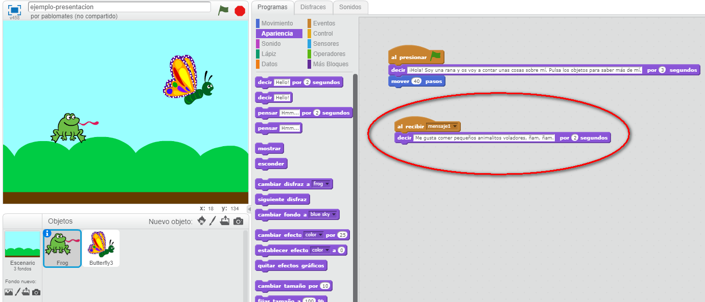
Paso 5. Y final. Compartir el proyecto si lo deseamos
Le damos al botón de compartir... y ya lo tenemos. El ejemplo anterior puede visitarse en el siguiente enlace: https://scratch.mit.edu/projects/188129308/, donde observaremos que podemos hacer dos cosas:
- Ver el programa en funcionamiento, a pantalla completa si queremos.
- Ver _dentro _del programa; esto es, cómo esta hecho e, incluso, reutilizar los bloques.
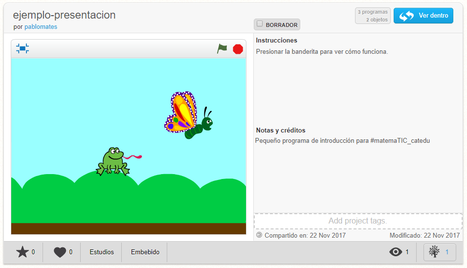
Diseño de una actividad de clase con Scratch
A continuación, dejamos un ejemplo de diseño en detalle de una actividad en torno a la idea de mínimo común múltiplo.
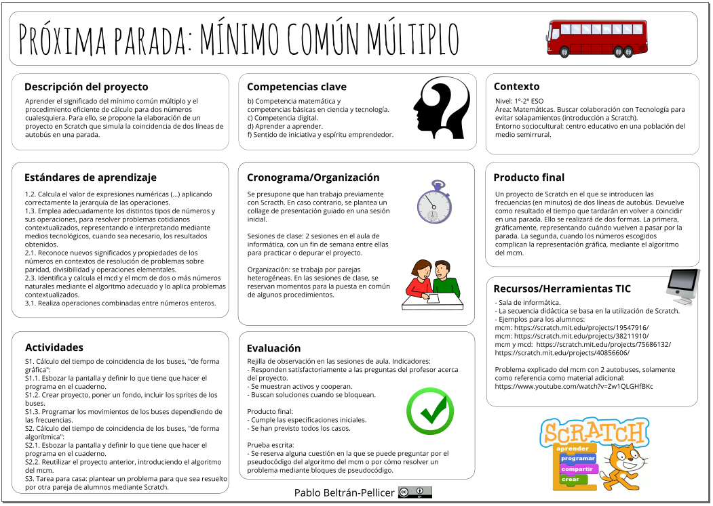